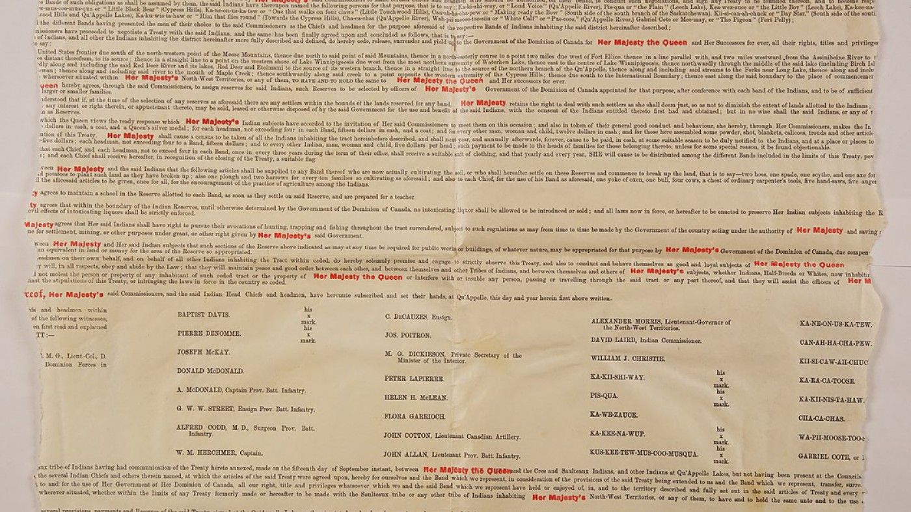
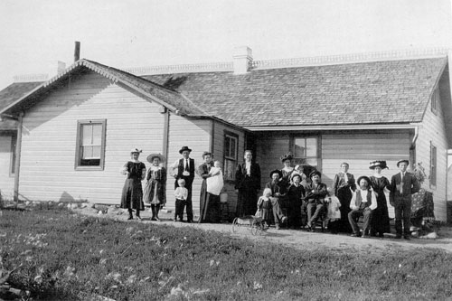

Negotiated Terms
Treaty Terms
When Treaty 4 was signed, the Canadian government and the First Nations both agreed on terms that would be followed. These terms included many things, which we will discuss on this page.

The Crown
The Crown received these:
- Rights to the land
- Protection from indigenous fishing on land being used for extracting resources or settlements
- Restricted alcohol use on reserves

First Nations
First Nations received these:
- Reserve Land
- Money Compensation
- Farming Tools
- Allowance for buying gunpowder, shot, bale, and fishing net twine ($750 per year)
- Right to hunt and fish on any land not used by Canada for settlements or resource extraction
- Schooling on reserves
Conclusion
These are the terms agreed upon in Treaty 4. While they were implemented in the treaty, some parts still haven't been honored, or have been done poorly. For example, the promised money compensation and support has been a lot less than what was agreed upon. Another example is when the government was givng the First Nations farming tools, they would give them their old, worn down and broken tools instead of new, usable ones. However, recently, there have been efforts made to fully realize all the terms of this treaty.